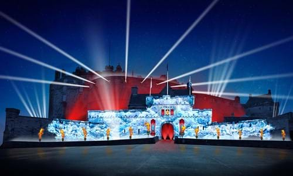
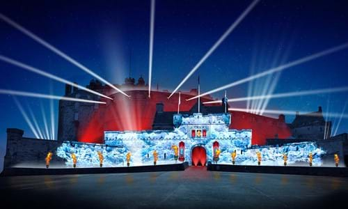

The Non-Touristy Tourist Guide to Edinburgh
About us
Here you'll find everything you need to know!
Who are we?
We are three Edinburgh University students who just love Edinburgh! The beautiful city has made an impact on our lives and would love people to see the local places where the tourist don't go.
Our favourite areas
Having lived across Edinburgh between us, we know the best places to go! Lucy's favourite places is Princes Street Gardens where a magnificent fountain is hidden under the shadow of the castle that doesn't get the attention it deserves. Leigh's favourtie place in Edinburgh is Boteco do Brasil, where she loves to chow down on a burger and sip on the cocktails, before heading up club Boteco for a bit of Salsa. Emer loves The Pitt market in Leith every Saturday and Sunday!
This Month's Recommendations
 
